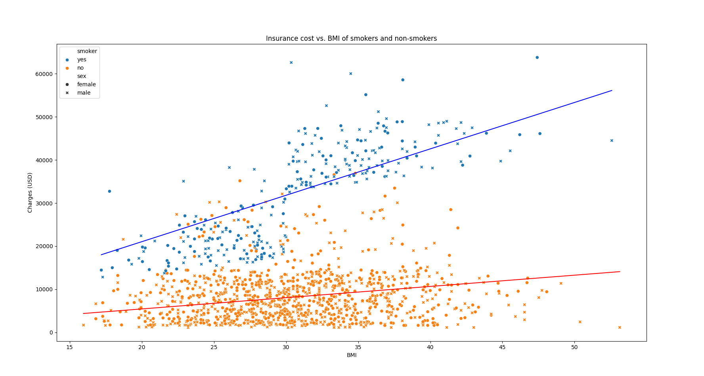

Hello! I'm August, a 20-year-old junior at Trinity University studying Computer Science and Physics, with a passion for mathematics.
Born and raised in Texas, I discovered programming in my sophomore year of high school and it quickly became my passion. I love exploring theoretical computer science, algorithms, and complex systems.
I have experience with multiple programming languages including C/C++, Python, Java, and web technologies. In my free time, I work on projects like physics simulations and audio plugins. I also enjoy playing piano, organ, and producing music.
Built a double-pendulum simulation backend in C++, compiling to WebAssembly (Wasm) with Emscripten to achieve near-native execution speed for physics calculations in the browser.
Developed an interactive frontend with TypeScript and PixiJS to render the real-time pendulum animation and display corresponding phase-space portraits using Plotly.js.
Showcases a derivation of the governing equations of motion using Lagrangian Mechanics and implements Runge-Kutta (RK4) integration to numerically solve the set of coupled non-linear ODEs.
Utilized DSP theory to build a custom highpass and lowpass filter audio plugin that can be used in digital audio workstations, such as Ableton Live, for use in audio processing and music production.
Built using the JUCE audio plugin development framework, utilizing Modern C++ practices.
Implemented components of a source to source compiler for the assembly language ILOC.
Designed and implemented a lexer, parser, register allocator, and instruction scheduler in the C programming language.
Designed a custom register allocator that beat a given reference allocator in reducing clock cycles.
Machine learning model built from scratch using pandas, Seaborn, and Matplotlib. It runs a linear regression on an insurance dataset in order to predict insurance cost based on patient BMI and smoker status.
First, a cost function is defined in terms of the parameters of a line (slope, y-intercept) so that a lower cost results in a better fitting line. Then we minimize the cost function by calculating the gradient of the cost function and then taking a step in the negative direction of the gradient.
